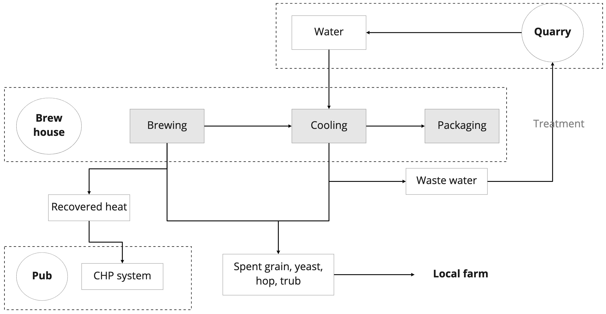

Comparison of 3 methods of importing map data to models
I am trying to set up a standard process for myself to import environmental and geographical data for architectural projects.
1. Blender + MapsModelsImporter + RenderDoc + Chrome
Step 1. Download MapsModelsImporter(v0.4.1) zip file from the following link: https://github.com/eliemichel/MapsModelsImporter/releases/tag/v0.4.1-rc1
Step 2. Open Blender ->Edit -> Addons, select downloaded zip file and check the addon box.
Step 2. Open Blender ->Edit -> Addons, select downloaded zip file and check the addon box.
Step 3. Download RenderDoc 1.13. Originally I downloaded RenderDoc 1.15, but it didn’t work when I later tried to ‘insert into process’. So keep to 1.13 or older versions.
Step 4. Go to C disk -> Program Files -> Google -> Chrome -> Application. Right click on Chrome (application file ) and choose ‘create shortcut’ to desktop. Go to desktop, right click the shortcut and choose ‘Properties’. In the Shortcut -> Target window, paste the following: C:\Windows\System32\cmd.exe /c "SET RENDERDOC_HOOK_EGL=0 && START "" ^"C:\Program Files \Google\Chrome\Application\chrome.exe^" --disable-gpu-sandbox --gpu-startup-dialog"
Step 5. Now the shortcut has become a command icon. Double click, a window should pop up saying ‘Gpu starting with pid: xxxxx’. Note down the 5-digit number.
Step 6. Open RenderDoc. Click File -> Inject Into Process. Here if you use the wrong version of RenderDoc, this selection will not come up. Find the name with the PID number that you have noted down. Click ‘Inject’.
Step 2. Open Blender ->Edit -> Addons, select downloaded zip file and check the addon box.
Step 2. Open Blender ->Edit -> Addons, select downloaded zip file and check the addon box.
2. Embedding pdfs in pages
I wanted to embed my portfolios in the webpage. There're several converters online that we can use to change pdf to html, but I am too lazy to download them. Instead I upload the pdf document to my repository and type in the following codes in the desired 'body' session of the portfolio html:

.
.
The pdf can be viewed without making the page too bulky, which is good. But the file does not work well on phones. And it always takes a long time to load. Is there a better way?
3. Embedding models in pages
There are some models that I want to embed in the pages which allow visitors to interact with. I tried exporting models from Rhino to Blender and to glTF format (which can be embedded in html), but it's not very ideal. So I then tried sketchfab.